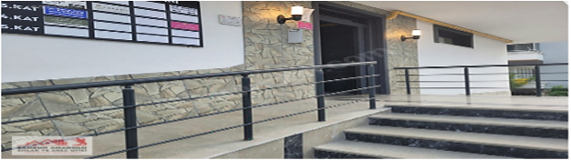

|
본 뉴스레터는 모바일보다는 PC에서 보시는 것을 권장드립니다.
|
|
고객사 여러분께 드리는 연말 인사
안녕하세요, 케이바이오솔루션입니다.
찬바람이 불고 거리에 불빛이 반짝이는 이 때, 저희는 올 한 해 동안
저희와 함께 해주신 귀사에 진심으로 감사의 인사를 전하고자 합니다.
2023년 한 해는 많은 변화와 도전이 있었던 시기였지만, 귀사와의 협력을 통해
우리 모두는 더 큰 성장과 발전을 이룰 수 있었습니다. 귀사의 신뢰와 지원에 깊은 감사를 드립니다.
크리스마스와 연말은 가족과 친구, 그리고 소중한 사람들과 함께
따뜻한 시간을 보내며, 지난 한 해를 돌아보고 새해를 준비하는 시간입니다.
귀사의 모든 구성원분들께 행복과 평안이 가득한 연말이 되시길 바랍니다.
2024년에도 귀사와 더욱 긴밀한 협력을 통해 서로의 성공을 함께 이뤄나가기를
기대합니다. 새해에도 변함없는 신뢰와 지원 부탁드립니다.
행복한 크리스마스와 새해 복 많이 받으시길 기원합니다.
감사합니다.
케이바이오솔루션 임직원 일동
|
케이바이오솔루션-유럽 터키
현지 MDR 의료기기 컨설팅 사무소 개설
2024.09에 올라온 기사입니다.
출처: 양샘의 독수리튜터링 블로그
“의료기기 국내 최다 #FDA , #MDR 컨설팅 기업 케이바이오솔루션- MDR인증 위한
#터키 #MDR사무소 개설: 서울 교대역 케이바이오솔루션 사무소,
미국 법인에 이어 글로벌 컨설팅 기업으로 도약
케이바이오솔루션: “의료기기 #FDA 510(k), #Pre-Submission
사전심사 총 50여건 진행, MDR 3등급 국내최초 인증 달성, 연이은 510(k),
#MDR승인성공노하우 로 의료기기 FDA컨설팅, MDR 승인 달성에
박차를 가한다.”
의료기기 FDA 컨설팅, MDR 인증 진행하는
#케이바이오솔루션 #강경윤 대표는 유럽 MDR 컨설팅
현지 사무소를
유럽 터키(튀르키예) Samsun City에 개설했다고 밝혔다.
케이바이오솔루션 터키 사무소에서 현재 2명의 컨설턴트가 #MDR기술문서,
#CER파일, #PMCF파일 작성의 컨설팅 업무를 맡고 있다고 밝혔다.

케이바이오솔루션 터키 MDR 컨설팅 사무소 주소: Yenimahalle, 55210 Atakum/Samsun, Turkey
블로그 자세히 보기
|
케이바이오솔루션,
유럽 터키 현지 MDR 컨설팅 사무소 개설
2024.09에 올라온 기사입니다.
출처: 의료기기뉴스라인
글로벌 의료기기 컨설팅 역량 확보
케이바이오솔루션 터키 MDR 컨설팅 사무소 주소: Yenimahalle, 55210 Atakum/Samsun, Turkey
의료기기 FDA 컨설팅, MDR 인증을 진행하는
케이바이오솔루션(대표 강경윤)이
유럽 MDR 컨설팅 현지 사무소를
튀르키예 삼순(Samsun)에 개설했다.
케이바이오솔루션 튀르키예 사무소에서는 현재 2명의 컨설턴트가
MDR 기술문서, 의료기기 임상평가 보고서(CER),
시판 후 임상적 추적 관찰(PMCF) 파일 작성의 컨설팅 업무를 맡고 있다.
미국 FDA 510(k) 승인 뿐만 아니라, 유럽 MDR 인증도 성공시키고 있는
케이바이오솔루션은 국내 최초로 의료기기 MDR CE 3등급
인증을 달성한 것에 이어서, 총 30여 의료기기 품목의
MDR CE 인증 컨설팅을 진행해 왔다.
기사 자세히 보기
|
케이바이오솔루션 FDA 510(k) 허가이력
| Clinical Field |
FDA
Product Code |
Device Name |
FDA 510(k)
승인번호 |
| 치과, Dental |
EKX |
Dental Handpiece, Wireless Endodontic Handpiece
510(k) 심사 파일, 보완 파일 전체 작성 완료 및 승인달성
|
K232810 |
| 치과, Dental |
EFA |
Dental Handpiece I
510(k) 심사 파일, 보완 파일 전체 작성 완료 및 승인달성
|
K192809 |
| 치과, Dental |
EGS |
Dental Handpiece II
|
K220577 |
| 정형외과, Orthopedics |
HSB |
Trochanteric Intramedullary Nail System
|
K150769 |
| 정형외과, Orthopedics |
MAI |
회전근개파열 Biocomposite Anchor
생물학적 안전성 시험 보완 수행 및 승인 달성
|
K171299 |
| 정형외과, Orthopedics |
LXJ |
정형외과 수술후 재활 소프트웨어 시스템
FDA 보완전략 자문 및 승인 달성
|
K172882 |
| 물리치료, Physical Therapy |
OBP |
ALTMS Magnetic Stimulation Therapy System (소프트웨어 포함)
510(k) 심사 파일, 보완 파일 전체 작성 완료 및 승인 달성
|
K202537 |
| 정신과 우울증 치료, Psychiatry |
IPF |
Talent-Pro Electromagnetic Stimulator (소프트웨어 포함)
510(k) 심사 파일, 보완 파일 전체 작성 완료 및 승인 달성
|
K202031 |
| 수술용 마스크, 외과 수술 |
FXX |
Fluid-Resistant Surgical Mask 510(k)
심사 파일, 보완 파일 전체 작성 완료 및 승인 달성
|
K211771 |
| 수술용가운, 외과 수술 |
FYA |
Surgical Gown 510(k)
심사 파일, 보완 파일 전체 작성 완료 및 승인 달성
|
K211771 |
| 소화기내과, Gastroenterology |
PKL, FHN, MND |
Hemostatic Clip I 510(k)
심사 파일, 보완 파일 전체 작성 완료 및 승인 달성
|
K183021 |
| 소화기내과, Gastroenterology |
PKL, FHN, MND |
Hemostatic Clip II 510(k)
심사 파일, 보완 파일 전체 작성 완료 및 승인 달성
|
K200217 |
| 소화기내과, Gastroenterology |
QAU |
Nexpowder 510(k)
심사 파일, 보완 파일 전체 작성 완료 및 승인 달성
|
K202929 |
| 영상의학과, Interventional Radiology |
LIT |
PTA Dilatation Catheter 510(k)
심사 파일, 보완 파일 전체 작성 완료 및 승인 달성
|
K201333 |
케이바이오솔루션 FDA Pre-Submission 완료이력
| Clinical Field |
FDA Product Code |
Device Name |
발달장애 Developmental Disorder,
소아정신과 |
QFT |
Digital Therapeutics Software,
SaMD 소프트웨어 의료기기 |
지각능력개선 Executive Functioning,
소아정신과 |
QFT |
Digital Therapeutics Software,
SaMD 소프트웨어 의료기기 |
| 갑상선암 관리 소프트웨어, 내분비내과 |
TBD |
Digital Therapeutics Software,
갑상선암 항진증 관리 소프트웨어 |
| 말라리아 AI 소프트웨어 IVD, 감염내과 |
JOY |
AI 소프트웨어 체외진단기 IVD |
| 피부과 |
OHV |
집속형초음파 HIFU 미용치료기 |
| 피부과 |
GEI |
고주파 RF 미용치료기 |
| 소화기내과, Gastroenterology |
QAU |
상부위장관 지혈재 |
| 대장외과, Colorectal Surgery |
KNT |
인공항문 대체 대장암 수술장관 관리기 전임상시험 |
| 대장외과, Colorectal Surgery |
KNT |
인공항문 대체 대장암 수술장관 관리기 임상시험 |
| 소화기내과, Gastroenterology |
ESW |
식도 비혈관 스텐트 |
| 성형외과, Plastic Surgery |
MUU |
자가지방유래 줄기세포 SVF 분리 키트 |
| 신경외과, Neurology |
NHL |
파킨슨병 치료 Deep Brain Stimulation System |
| 이비인후과, ENT otolaryngology |
TBD |
청력진단 SaMD 소프트웨어 의료기기 |
| 산부인과, OBGYN |
POV |
남성 정자 Motility 분석 의료기기 |
|
MDR 허가이력
강경윤 대표 및 케이바이오솔루션에서 MDR CE 최종 승인까지 완료시킨 제품:
| 01 |
코스닥 상장사 (주)메디아나 |
MDR 3등급 자동심장충격기 CE 승인 취득
|
| 02 |
코스닥 상장사 (주)인바디 |
MDR 2a등급 체성분분석기 CE 승인 취득
|
| 03 |
존슨앤존슨 |
MDR 2b등급 안구건조증 치료장치 CE 승인 취득
|
| 04 |
존슨앤존슨 |
MDR 2a등급 안구건조증 진단기기 CE 승인
|
| 05 |
존슨앤존슨 |
MDR 2b등급 백내장 수술장치 CE 승인
|
| 06 |
존슨앤존슨 |
MDR 2a등급 백내장 수술 수정체 유화기기 CE 승인
|
| 07 |
존슨앤존슨 |
MDR 2a등급 백내장 수술 수정체유화용 핸드피스 CE 승인
|
|
|
|
|